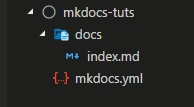

MkDocs¶
MKDocs 는 글쓰기 도구입니다. 글쓰기 도구에는 sphinx, read docs 등 다양한 도구들이 있습니다.
MKDocs 는 간편하고, 마크다운 방식으로 글쓰기를 하며, serve 라는 명령어를 통해서 실시간으로 글쓰는 모습을 확인할수 있어서 선택하였습니다.
자세한 내용은 mkdocs.org 에서 확인할 수 있습니다.
설치¶
MKDocs 는 Python이 설치되어 있어야하며 Python 패키지 관리자인 pip가 있어야합니다 설치가 안되어있다면 설치한 후 진행을 해야합니다.
mkdocs 설치¶
명령창에 아래코드를 입력하여 mkdocs 를 설치합니다.
pip install mkdocs
윈도우에서 설치가 안될경우
python -m pip install mkdocs를 입력해서 설치합니다.
작업폴더 생성¶
new 키워드를 이용해서 작업할 디렉토리를 생성합니다.
mkdocs new mkdocs-tuts
그럼 mkdocs.yml 과 docs/index.md 가 생성이 됩니다.

실시간 확인하기¶
먼저 작업 디렉토리로 이동합니다.
cd mkdocs-tuts
serve 키워드를 이용해서 실시간 작업을 확인합니다.
mkdocs serve
그럼 http://127.0.0.1:8000 으로 확인할 수 있습니다.

내용을 수정하거나 추가하면 바로 반영이 되어서 브라우져에서 확인할 수 있습니다.
정지할때는 ctrl+c 를 누르면 정지됩니다.
빌드하기¶
배포하기전에 빌드를 해서 종속된 파일들을 모두 생성합니다.
mkdocs build
구조를 보면 site 라는 폴더가 생성이 되고 종속된 파일들이 설치가 된걸 볼 수 있습니다.